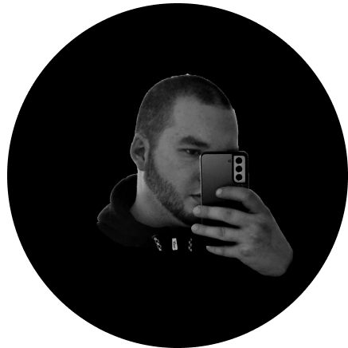

MY BIOGRAPHY

Hello. My name is Denis and I am a beginner web developer and designer.
Born in the city of Smela, Cherkasy region.
Studied in Cherkasy. I have one higher education and I am also studying for a master's degree at DUIT
Specialty "Railway spores"
Bachelor in the specialty "Security of information and telecommunication technologies".
I do my job to the end and I take my work very responsibly.
The positive qualities include: Responsibility, stress resistance, diligence,
attentiveness, I like to learn new things, sociability!!!
WHAT DO I OWN?! -
WHAT DO I OWN?! -
- HTML5, CSS3, SASS, SCSS
- JAVA SCRIPT, REACT
- WORDPRESS. BOOTSTRAP
- FIGMA, PHOTOSHOP, AVOCODE